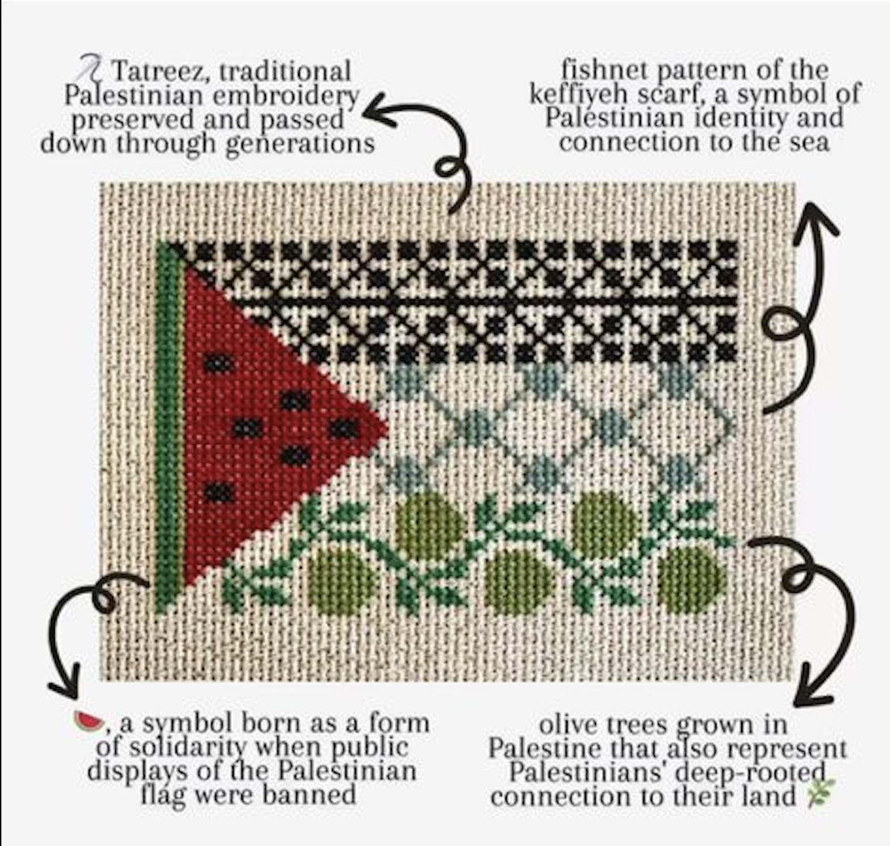

Discover
Explore the techniques, visual details and regional diversity that make Palestinian embroidery so distinctive.
A digital space for a living heritage
TATREEZ is a space dedicated to Palestinian embroidery — its beauty, its diversity and the people who keep this tradition present in everyday life.

Why this project exists
This project brings together stories, embroidered details and regional garments to offer an accessible way to discover Palestinian Tatreez.
It is designed as an invitation to look closely: to notice the care in each stitch, explore the variety of textile traditions and appreciate the knowledge carried from one generation to another.
Rather than treating embroidery as something frozen in the past, TATREEZ presents it as a living practice — one that can be remembered, shared and reimagined.
The spirit of TATREEZ
Explore the techniques, visual details and regional diversity that make Palestinian embroidery so distinctive.
Approach cultural heritage with care, acknowledging the makers, communities and knowledge behind every textile.
Connect tradition with the present through a creative space that invites curiosity and experimentation.
Explore the embroidered details, meet the regional thoub styles and try creating a motif of your own.
EXPLORE THE GALLERY ↗